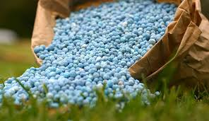

back
The Agricultural Chemicals Regulation Law defines “agricultural chemicals” as chemical agents such as fungicides and insecticides that are used to control crop-harming organisms (e.g., fungi, nematodes, mites, insects, and rodents) or viruses (hereinafter collectively referred to as "diseases and pests") (the "crop,” as used herein, shall include wood and agroforestry products and those used to promote or inhibit the physiology of agricultural and other products, such as plant growth regulators and germination inhibitors (Hereinafter referred to as "agricultural and other products). The chemical agents here include those manufactured using the above chemical agents as raw materials or ingredients that are intended to control the diseases and pests that are stipulated in the ordinances. The law also includes "natural enemies" and "microorganisms" that are used to control diseases and pests of agricultural and other products, as the agricultural chemicals.

Why are agricultural chemicals used?
People have long endeavored to protect field crops from disease, pests and weeds. These methods include breeding varieties resistant to pests and diseases, cultural control of diseases and pests by plowing and removing crop debris after harvest, weed control using vinyl sheeting and spreading straw, physical pest control such as soil disinfection using solar heating, and biotic control using natural enemies such as spiders. In addition, agricultural chemicals are used because they produce certain effects with less effort.
what is the magnitude of the damage caused by diseases, pests and weeds?
In the era in which no effective methods were available to control diseases and pests, in the Kyoho Era in Japan for instance, many people starved to death because planthoppers took a heavy toll on rice production. In other countries, in Ireland for instance, a severe potato blight (potatoes are the major food staple there) caused a devastating famine.
Previous investigation results show that, when common cultivation practices are used, crop yield decreases significantly without control measures against diseases and pests.
history of agricultural chemicals
In Japan, farmers used to walk around the rice paddies in procession yelling, with drums, alarm bells, torches to drive away rice bugs. This is called "mushi-oi" or "mushi-okuri" (meaning driving away noxious insects). In the Edo Era, a new method was invented, in which whale oil was sprayed on rice paddies to destroy harmful insect pests on rice, which was used until the early Showa Era. In the days before World War II, naturally-derived pesticides such as pyrethrums (the same ingredient as that in mosquito coils) and nicotine sulfate (from tobacco), or naturally derived fungicides such as copper and lime sulphur were used. However, weed control depended solely on hand weeding, and this continued until herbicides were developed after the war. Hand weeding under the scorching sun is very hard labor.
Postwar advances in technology saw the advent of chemically synthesized agricultural chemicals, which brought about an increase in crop yield and efficiency in farm work. Figure 1 shows the chronological changes in total labor hours and weeding time in the rice paddies. A weeding time of 50 hours per 10 are in 1949 dropped to approximately 2 hours per 10 are in 1999, showing that herbicides had made the weeding work more efficient. However, these agricultural chemicals were highly toxic to humans; some caused frequent accidents during use, some were highly residual in crops (crop residue), and some were highly residual in soils. This became a social concern in the decade from 1965.
This led to the revision of the Agricultural Chemicals Regulation Law in 1971, in which "the protection of public health" and "the maintenance of the national living environment" were proclaimed as the objectives, and manufacturers and importers of agricultural chemicals were additionally obliged, when applying to register agricultural chemicals, to submit results from acute and long-term toxicity tests in mammals and residue studies in crops and soils. As a result, highly residual and highly human toxic conventional agricultural chemicals, such as BHC, DDT, and drin insecticide were banned or restricted for sale. Since around this time, the development of agricultural chemicals has made the transition to less human toxic, and less residual products (Fig. 2). Recently, biological agricultural chemicals have been developed and promoted.
How is the safety of agricultural chemicals guaranteed?
Agricultural chemicals are agents or natural enemies that can affect organisms and the environment, if used incorrectly. A registration system for agricultural chemicals ensures that the standards for residues in crops and the effects on aquatic organisms are established, and their usage are specified not to exceed those standards, based on which the agricultural chemicals are examined and thus their safety is guaranteed.
The safety of agricultural chemicals is ensured by complying with the usage rules specified for the registered agricultural chemicals.
back